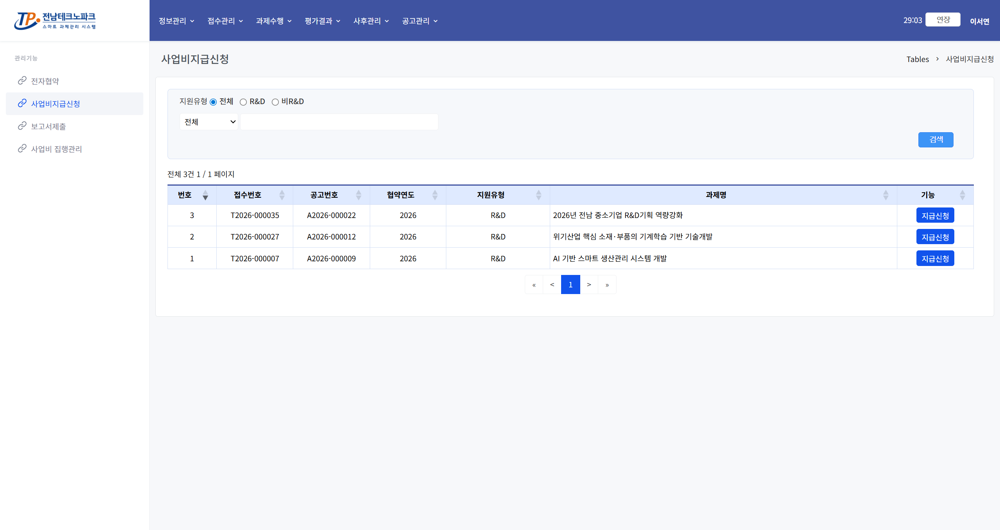
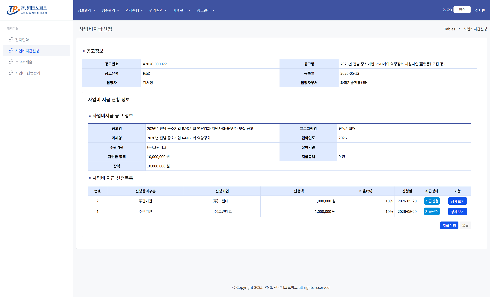
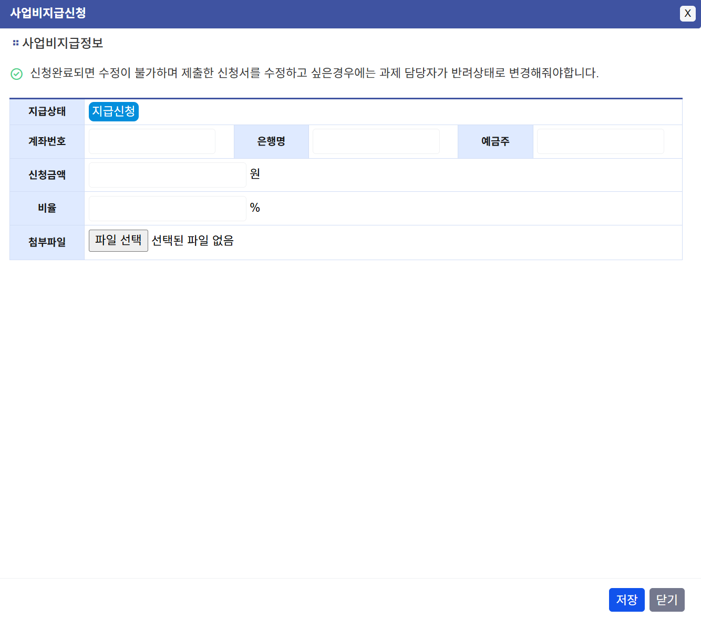

사업비 지급 신청 사용자
1. 사업비 지급신청 목록 진입
마이페이지 「과제수행」 → 「사업비지급신청」 클릭 → 신청 대상 과제 행 클릭

2. 사업비 지급신청서 확인
지급 신청 내역을 확인하고 「지급신청」 버튼 클릭

3. 사업비 지급정보 작성
계좌정보·신청금액 등 지급에 필요한 정보를 입력하고 「저장」 버튼 클릭

💡 안내
신청 완료 후 관리자가 지급 내역을 검토하고 사업비를 처리합니다.